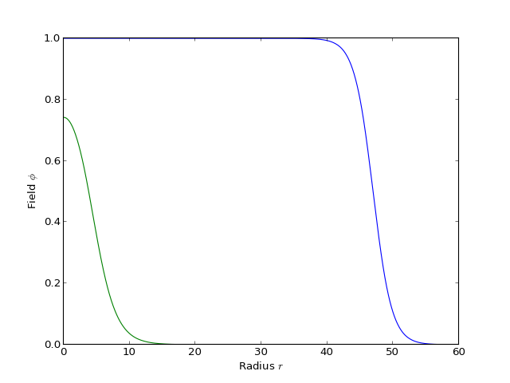

tunneling1D.py¶
This module (along with a few functions in helper_functions) contains
everything that is needed to calculate instantons in one field dimension.
The primary class is SingleFieldInstanton, which can calculate the
instanton solution in any number of spatial dimensions using the overshoot /
undershoot method. Additional classes inherit common functionality from this
one, and can be used to calculate the bubble wall profile with constant
friction (WallWithConstFriction) instead of radius-dependent friction,
or to calculate the instanton in the presence of gravity (not yet
implemented).
Todo
Create and document a CDL_Instanton class for tunneling with gravity.
PotentialError¶
SingleFieldInstanton¶
-
class
SingleFieldInstanton(phi_absMin, phi_metaMin, V, dV=None, d2V=None, phi_eps=0.001, alpha=2, phi_bar=None, rscale=None)[source]¶ Bases:
objectThis class will calculate properties of an instanton with a single scalar Field without gravity using the overshoot/undershoot method.
Most users will probably be primarily interested in the functions
findProfile()andfindAction().Note
When the bubble is thin-walled (due to nearly degenerate minima), an approximate solution is found to the equations of motion and integration starts close to the wall itself (instead of always starting at the center of the bubble). This way the overshoot/undershoot method runs just as fast for extremely thin-walled bubbles as it does for thick-walled bubbles.
Parameters: - phi_absMin (float) – The field value at the stable vacuum to which the instanton
tunnels. Nowhere in the code is it required that there actually be a
minimum at phi_absMin, but the
findProfile()function will only use initial conditions between phi_absMin and phi_metaMin, and the code is optimized for thin-walled bubbles when the center of the instanton is close to phi_absMin. - phi_metaMin (float) – The field value in the metastable vacuum.
- V (callable) – The potential function. It should take as its single parameter the field value phi.
- d2V (dV,) – The potential’s first and second derivatives. If not None, these
override the methods
dV()andd2V(). - phi_eps (float, optional) – A small value used to calculate derivatives (if not overriden by
the user) and in the function
dV_from_absMin(). The input should be unitless; it is later rescaled byabs(phi_absMin - phi_metaMin). - alpha (int or float, optional) – The coefficient for the friction term in the ODE. This is also the number of spacetime dimensions minus 1.
- phi_bar (float, optional) – The field value at the edge of the barrier. If None, it is found by
findBarrierLocation(). - rscale (float, optional) – The approximate radial scale of the instanton. If None it is found by
findRScale().
Raises: PotentialError– when the barrier is non-existent or when the presumably stable minimum has a higher energy that the metastable minimum.Examples
Thick and thin-walled bubbles:
from cosmoTransitions.tunneling1D import SingleFieldInstanton import matplotlib.pyplot as plt # Thin-walled def V1(phi): return 0.25*phi**4 - 0.49*phi**3 + 0.235 * phi**2 def dV1(phi): return phi*(phi-.47)*(phi-1) profile = SingleFieldInstanton(1.0, 0.0, V1, dV1).findProfile() plt.plot(profile.R, profile.Phi) # Thick-walled def V2(phi): return 0.25*phi**4 - 0.4*phi**3 + 0.1 * phi**2 def dV2(phi): return phi*(phi-.2)*(phi-1) profile = SingleFieldInstanton(1.0, 0.0, V2, dV2).findProfile() plt.plot(profile.R, profile.Phi) plt.xlabel(r"Radius $r$") plt.ylabel(r"Field $\phi$") plt.show()
(Source code, png, hires.png, pdf)
-
dV(phi)[source]¶ Calculates dV/dphi using finite differences.
The finite difference is given by self.phi_eps, and the derivative is calculated to fourth order.
-
dV_from_absMin(delta_phi)[source]¶ Calculates dV/dphi at
phi = phi_absMin + delta_phi.It is sometimes helpful to find dV/dphi extremely close to the minimum. In this case, floating-point error can be significant. To get increased accuracy, this function expands about the minimum in a Taylor series and uses that for nearby values. That is, \(V'(\phi) \approx V''(\phi_{\rm absMin})(\phi-\phi_{\rm absMin})\). For values that are farther away, it instead uses
dV(). It blends the two methods so that there are no numerical discontinuities.This uses self.phi_eps to determine whether the field is considered nearby or not.
-
d2V(phi)[source]¶ Calculates d^2V/dphi^2 using finite differences.
The finite difference is given by self.phi_eps, and the derivative is calculated to fourth order.
-
findBarrierLocation()[source]¶ Find edge of the potential barrier.
Returns: phi_barrier (float) – The value such that V(phi_barrier) = V(phi_metaMin)
-
findRScale()[source]¶ Find the characteristic length scale for tunneling over the potential barrier.
The characteristic length scale should formally be given by the period of oscillations about the top of the potential barrier. However, it is perfectly acceptable for the potential barrier to have a flat top, in which case a naive calculation of the length scale would be infinite. Instead, this function finds the top of the barrier along with a cubic function that has a maximum at the barrier top and a minimum at the metastable minimum. The returned length scale is then the period of oscillations about this cubic maximum.
Raises: PotentialError– when the barrier is non-existent.
-
exactSolution(r, phi0, dV, d2V)[source]¶ Find phi(r) given phi(r=0), assuming a quadratic potential.
Parameters: - r (float) – The radius at which the solution should be calculated.
- phi0 (float) – The field at r=0.
- d2V (dV,) – The potential’s first and second derivatives evaluated at phi0.
Returns: phi, dphi (float) – The field and its derivative evaluated at r.
Notes
If the potential at the point \(\phi_0\) is a simple quadratic, the solution to the instanton equation of motion can be determined exactly. The non-singular solution to
\[\frac{d^2\phi}{dr^2} + \frac{\alpha}{r}\frac{d\phi}{dr} = V'(\phi_0) + V''(\phi_0) (\phi-\phi_0)\]is
\[\phi(r)-\phi_0 = \frac{V'}{V''}\left[ \Gamma(\nu+1)\left(\frac{\beta r}{2}\right)^{-\nu} I_\nu(\beta r) - 1 \right]\]where \(\nu = \frac{\alpha-1}{2}\), \(I_\nu\) is the modified Bessel function, and \(\beta^2 = V''(\phi_0) > 0\). If instead \(-\beta^2 = V''(\phi_0) < 0\), the solution is the same but with \(I_\nu \rightarrow J_\nu\).
-
initialConditions(delta_phi0, rmin, delta_phi_cutoff)[source]¶ Finds the initial conditions for integration.
The instanton equations of motion are singular at r=0, so we need to start the integration at some larger radius. This function finds the value r0 such that phi(r0) = phi_cutoff. If there is no such value, it returns the intial conditions at rmin.
Parameters: - delta_phi0 (float) – delta_phi0 = phi(r=0) - phi_absMin
- rmin (float) – The smallest acceptable radius at which to start integration.
- delta_phi_cutoff (float) – The desired value for phi(r0). delta_phi_cutoff = phi(r0) - phi_absMin.
Returns: r0, phi, dphi (float) – The initial radius and the field and its derivative at that radius.
Notes
The field values are calculated using
exactSolution().
-
integrateProfile(r0, y0, dr0, epsfrac, epsabs, drmin, rmax, *eqn_args)[source]¶ Integrate the bubble wall equation:
\[\frac{d^2\phi}{dr^2} + \frac{\alpha}{r}\frac{d\phi}{dr} = \frac{dV}{d\phi}.\]The integration will stop when it either overshoots or undershoots the false vacuum minimum, or when it converges upon the false vacuum minimum.
Parameters: - r0 (float) – The starting radius for the integration.
- y0 (array_like) – The starting values [phi(r0), dphi(r0)].
- dr0 (float) – The starting integration stepsize.
- epsabs (epsfrac,) – The error tolerances used for integration. This is fed into
helper_functions.rkqs()and is used to test for convergence. - drmin (float) – The minimum allowed value of dr before raising an error.
- rmax (float) – The maximum allowed value of r-r0 before raising an error.
- eqn_args (tuple) – Extra arguments to pass to
equationOfMotion(). Useful for subclasses.
Returns: - r (float) – The final radius.
- y (array_like) – The final field values [phi, dphi]
- convergence_type (str) – Either ‘overshoot’, ‘undershoot’, or ‘converged’.
Raises: helper_functions.IntegrationError–
-
profile_rval¶ alias of
Profile1D
-
integrateAndSaveProfile(R, y0, dr, epsfrac, epsabs, drmin, *eqn_args)[source]¶ Integrate the bubble profile, saving the output in an array.
Parameters: - R (array_like) – The array of points at which we want to save the profile.
- y0 (float) – The starting values [phi(r0), dphi(r0)].
- dr (float) – Starting stepsize.
- epsabs (epsfrac,) – The error tolerances used for integration. This
is fed into
helper_functions.rkqs(). - drmin (float) – The smallest allowed stepsize.
- eqn_args (tuple) – Extra arguments to pass to
equationOfMotion(). Useful for subclasses.
Returns: - R, Phi, dPhi (array_like) – Radii and field values which make up the bubble profile.
- Rerr (float or None) –
The first value of r at which
dr < drmin, or None ifdr >= drminalways.
Notes
Subclasses can use this function without overriding it even if the subclass uses more fields/values in its equation of motion (i.e.,
len(y0) > 2). This is accomplished by setting the class variableprofile_rvalto a different named tuple type with more than four inputs. The first three should always be R, Phi, dPhi, and the last one should be Rerr, but additional values can be stuck in between.
-
findProfile(xguess=None, xtol=0.0001, phitol=0.0001, thinCutoff=0.01, npoints=500, rmin=0.0001, rmax=10000.0, max_interior_pts=None)[source]¶ Calculate the bubble profile by iteratively over/undershooting.
This will call
integrateProfile()many times, trying to find the correct initial condition phi(r=0) such that the field ends up in the metastable vacuum at infinity. Once the correct initial condition is found, it callsintegrateAndSaveProfile()to find the profile along the length of the wall.Parameters: - xguess (float, optional) – The initial guess for x. If None, xguess is set such
that
phi_guess = self.phi_bar. - xtol (float, optional) – Target accuracy in x.
- phitol (float, optional) – Fractional error tolerance in integration.
- thinCutoff (float, optional) – Equal to delta_phi_cutoff / (phi_metaMin - phi_absMin), where
delta_phi_cutoff is used in
initialConditions(). - npoints (int) – Number of points to return in the profile.
- rmin (float) – Relative to
self.rscale. Sets the smallest starting radius, the starting stepsize, and the smallest allowed stepsize (0.01*rmin). - rmax (float) – Relative
self.rscale. Sets the maximum allowed integration distance. - max_interior_pts (int) – Maximum number of points to place between
r=0and the start of integration. If None,max_interior_pts=npoints/2. If zero, no points are added to the bubble interior.
Returns: - R, Phi, dPhi (array_like) – Radii and field values which make up the bubble profile. Note that R[0] can be much bigger than zero for thin-walled bubbles.
- Rerr (float or None) –
The first value of r at which
dr < drmin, or None ifdr >= drminalways.
Notes
For very thin-walled bubbles, the initially value of phi can be extremely close to the stable minimum and small variations in phi can cause large variations in the integration. Rather than varying phi(r=0) directly, it is easier to vary a parameter x defined by
\[\phi(r=0) = \phi_{\rm absMin} + e^{-x}(\phi_{\rm metaMin}-\phi_{\rm absMin})\]This way, phi = phi_metaMin when x is zero and phi = phi_absMin when x is infinity.
- xguess (float, optional) – The initial guess for x. If None, xguess is set such
that
-
findAction(profile)[source]¶ Calculate the Euclidean action for the instanton:
\[S = \int [(d\phi/dr)^2 + V(\phi)] r^\alpha dr d\Omega_\alpha\]Parameters: profile – Output from findProfile().Returns: float – The Euclidean action.
-
evenlySpacedPhi(phi, dphi, npoints=100, k=1, fixAbs=True)[source]¶ This method takes phi and dphi as input, which will probably come from the output of
findProfile(), and returns a different set of arrays phi2 and dphi2 such that phi2 is linearly spaced (instead of r).Parameters: - dphi (phi,) –
- npoints (int) – The number of points to output.
- k (int) – The degree of spline fitting.
k=1means linear interpolation. - fixAbs (bool) – If true, make phi go all the way to phi_absMin.
- phi_absMin (float) – The field value at the stable vacuum to which the instanton
tunnels. Nowhere in the code is it required that there actually be a
minimum at phi_absMin, but the
{kind=link}
{kind=link}
WallWithConstFriction¶
-
class
WallWithConstFriction(phi_absMin, phi_metaMin, V, dV=None, d2V=None, phi_eps=0.001, alpha=2, phi_bar=None, rscale=None)[source]¶ Bases:
cosmoTransitions.tunneling1D.SingleFieldInstantonThis class solves a modified version of the instanton equations of motion with a constant friction term.
This may be useful if one wants to estimate the shape of a bubble wall moving through a plasma. It will, however, be a rough estimate since a real friction force would most likely be field-dependent.
-
findRScale()[source]¶ Find the characteristic length scale for tunneling over the potential barrier.
Since for this class the tunneling solution always goes between the two minima, we want to take the overall shape between the two (not just at the top of the barrier) to set the radial scale. This finds the scale by fitting a simple quadratic to the potential.
Raises: PotentialError– when the barrier is non-existent.
-
initialConditions(F, phi0_rel=0.001)[source]¶ Get the initial conditions for integration.
Parameters: - F (float) – Magnitude of the friction term.
- phi0_rel (float) – The initial value for the field, relative to the two minima with 0.0 being at phi_absMin and 1.0 being at phi_metaMin (should be close to 0.0).
Returns: r0, phi, dphi (float) – The initial radius and the field and its derivative at that radius.
Notes
Approximate the equation of motion near the minimum as
\[\phi'' + F \phi' = (\phi-\phi_{absMin}) \frac{d^2V}{d\phi^2}\]which has solution
\[\phi(r) = (\phi_0-\phi_{absMin}) e^{kr} + \phi_{absMin}\]where \(k = (\sqrt{F^2 + 4 V''} - F) / 2\).
-
profile_rval¶ alias of
Profile1D
-
findProfile(Fguess=None, Ftol=0.0001, phitol=0.0001, npoints=500, rmin=0.0001, rmax=10000.0, phi0_rel=0.001)[source]¶ Calculate the bubble profile by iteratively over/undershooting.
Parameters: - Fguess (float, optional) – The initial guess for F. If None, Fguess is calculated from self.rscale.
- Ftol (float, optional) – Target accuracy in F, relative to Fguess.
- phitol (float, optional) – Fractional error tolerance in integration.
- npoints (int) – Number of points to return in the profile.
- rmin (float) – Relative to
self.rscale. Sets the smallest starting radius, the starting stepsize, and the smallest allowed stepsize (0.01*rmin). - rmax (float) – Relative
self.rscale. Sets the maximum allowed integration distance. - phi0_rel (float) – Passed to
initialConditions().
Returns: - R, Phi, dPhi (array_like) – Radii and field values which make up the bubble profile. Note that R[0] can be much bigger than zero for thin-walled bubbles.
- Rerr (float or None) –
The first value of r at which
dr < drmin, or None ifdr >= drminalways.
-